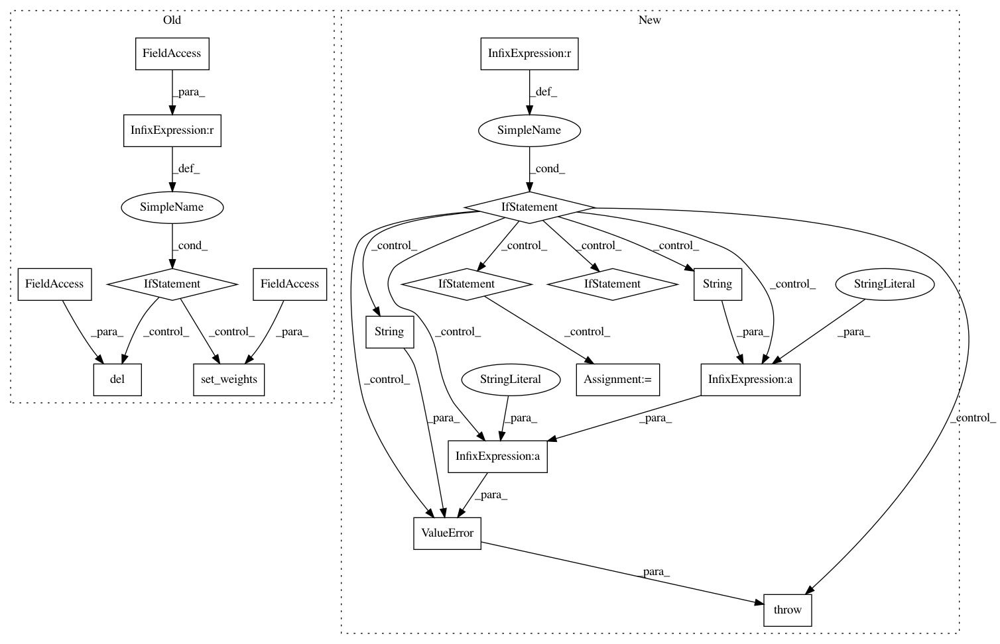

023331ec2a7b0086abfc81eca16c84a1692ee653,keras/layers/convolutional.py,Convolution1D,build,#Convolution1D#Any#,127
Before Change
else:
self.b = None
if self.initial_weights is not None:
self.set_weights(self.initial_weights)
del self.initial_weights
self.built = True
def get_output_shape_for(self, input_shape):
length = conv_output_length(input_shape[1],
After Change
self.input_spec = [InputSpec(ndim=4)]
def build(self, input_shape):
if len(input_shape) != 4:
raise ValueError("Inputs should have rank " +
str(4) +
"Received input shape:", str(input_shape))
if self.data_format == "channels_first":
channel_axis = 1
else:
channel_axis = -1
if input_shape[channel_axis] is None:
raise ValueError("The channel dimension of the inputs "
"should be defined. Found `None`.")
input_dim = input_shape[channel_axis]
kernel_shape = self.kernel_size + (self.filters, input_dim)
self.kernel = self.add_weight(kernel_shape,
initializer=self.kernel_initializer,
name="kernel",
In pattern: SUPERPATTERN
Frequency: 3
Non-data size: 18
Instances
Project Name: keras-team/keras
Commit Name: 023331ec2a7b0086abfc81eca16c84a1692ee653
Time: 2017-02-09
Author: francois.chollet@gmail.com
File Name: keras/layers/convolutional.py
Class Name: Convolution1D
Method Name: build
Project Name: keras-team/keras
Commit Name: 03a7eb89e27b70f2ca0ac932ef4bace7569d6fab
Time: 2017-02-13
Author: francois.chollet@gmail.com
File Name: keras/layers/normalization.py
Class Name: BatchNormalization
Method Name: build
Project Name: keras-team/keras
Commit Name: 023331ec2a7b0086abfc81eca16c84a1692ee653
Time: 2017-02-09
Author: francois.chollet@gmail.com
File Name: keras/layers/core.py
Class Name: TimeDistributedDense
Method Name: build